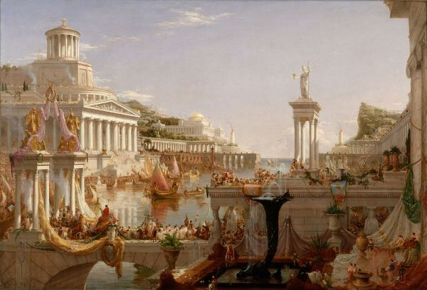
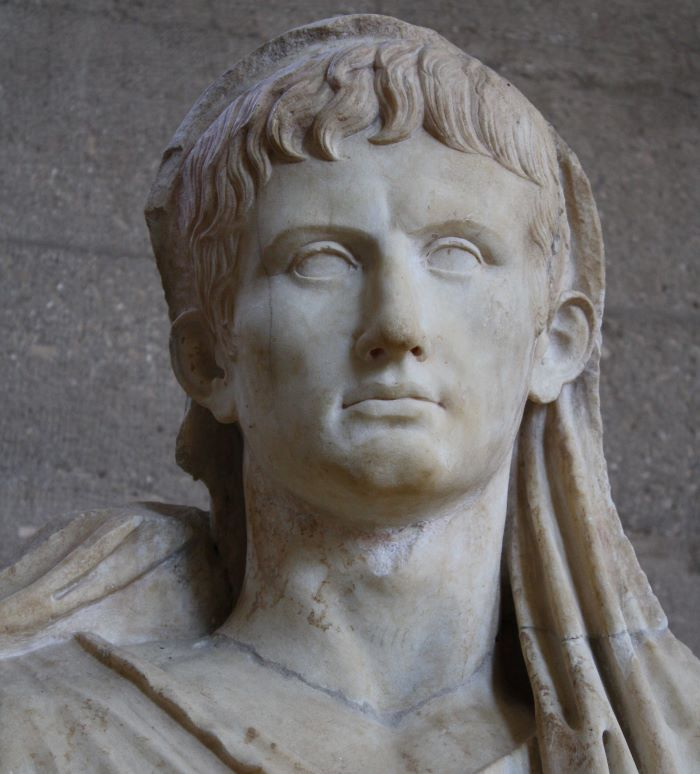

Império Romano
A Consumação do Império.Oléo sobre tela, 1836
História
O Império Romano é uma das civilizações mais icônicas da história humana, tendo desempenhado um papel crucial na formação do mundo ocidental. Sua história começa com a lendária fundação de Roma em 753 a.C., segundo a tradição romana. Inicialmente uma pequena cidade-estado na Península Itálica, Roma expandiu seu território através de conquistas militares e alianças diplomáticas, estendendo seu domínio sobre todo o Mediterrâneo.
O período da República Romana foi marcado por lutas internas de poder entre a aristocracia senatorial e líderes populares, culminando na ascensão de Júlio César ao poder como ditador vitalício em 44 a.C. No entanto, a morte de César deu início a uma série de conflitos entre seus sucessores, que culminaram na transformação do sistema político romano em um império sob Augusto, o primeiro imperador romano.
O ápice do poder imperial foi alcançado durante os reinados de Augusto e seus sucessores, conhecidos como os cinco bons imperadores. Durante esse período, o Império Romano experimentou uma era de relativa estabilidade e prosperidade, conhecida como a Pax Romana, caracterizada pela expansão econômica, avanços culturais e relativa paz interna.
No entanto, o Império Romano enfrentou desafios significativos ao longo de sua história, incluindo invasões bárbaras, instabilidade política, crises econômicas e divisões internas. Eventualmente, no século V d.C., o Império Romano do Ocidente entrou em colapso sob o peso dessas pressões, enquanto o Império Romano do Oriente, conhecido como Império Bizantino, continuou a existir por mais mil anos.
Política
A política do Império Romano era complexa e evoluiu ao longo do tempo. Durante a República Romana, o governo era uma mistura de elementos democráticos e oligárquicos, com um Senado dominado pela aristocracia e magistrados eleitos anualmente. No entanto, o sistema político começou a se deteriorar devido a lutas de poder internas e corrupção.
Com a ascensão de Augusto ao poder, o sistema político foi transformado em uma monarquia disfarçada, na qual o imperador detinha o poder supremo. O Senado ainda existia, mas sua influência foi reduzida, tornando-se em grande parte uma instituição cerimonial. O imperador governava com o apoio de uma burocracia eficiente e do exército.
Durante os séculos seguintes, o Império Romano enfrentou desafios políticos, incluindo intrigas palacianas, usurpações e tentativas de reforma. Alguns imperadores, como Diocleciano e Constantino, tentaram reorganizar o império para enfrentar melhor as ameaças internas e externas, dividindo-o em partes administrativas menores e adotando o cristianismo como religião oficial.
No entanto, a estrutura política do Império Romano não conseguiu lidar com as crescentes pressões, e o poder imperial se fragmentou após o colapso do Império Romano do Ocidente. O Império Bizantino, por outro lado, continuou a manter uma forma de governo imperial centralizado até sua queda em 1453.
Augusto como Pontifex Maximus (detalhe)
Cultura
A cultura do Império Romano foi uma fusão de influências gregas, etruscas e orientais, que se desenvolveram ao longo de séculos de interação e intercâmbio cultural. Os romanos adotaram muitos aspectos da cultura grega, incluindo mitologia, filosofia, arte e arquitetura, mas os adaptaram ao seu próprio contexto.
A arquitetura romana é uma das contribuições mais duradouras do Império Romano, com monumentos emblemáticos como o Coliseu, o Pantheon e aquedutos que ainda impressionam as pessoas hoje. Além disso, os romanos desenvolveram técnicas avançadas de construção e engenharia que permitiram a construção de estruturas duráveis e funcionais em todo o império.

Coliseu (foto)
A literatura romana também floresceu durante o período imperial, com escritores como Virgílio, Ovídio, Tácito e Sêneca produzindo obras-primas que continuam a ser estudadas e apreciadas até hoje. A língua latina, a língua oficial do império, tornou-se a base do idioma romance, que deu origem ao francês, espanhol, italiano, português e outros idiomas modernos.
Além disso, o Império Romano deixou um legado duradouro em áreas como direito, engenharia, urbanismo e religião. O cristianismo, que começou como uma religião marginal no Império Romano, eventualmente se tornou a religião dominante, influenciando profundamente a cultura e a sociedade europeias.
Em resumo, o Império Romano deixou um impacto indelével na história, política e cultura do mundo ocidental, moldando o curso da civilização por séculos após sua queda. Suas realizações e legado continuam a inspirar e fascinar as pessoas até os dias atuais.